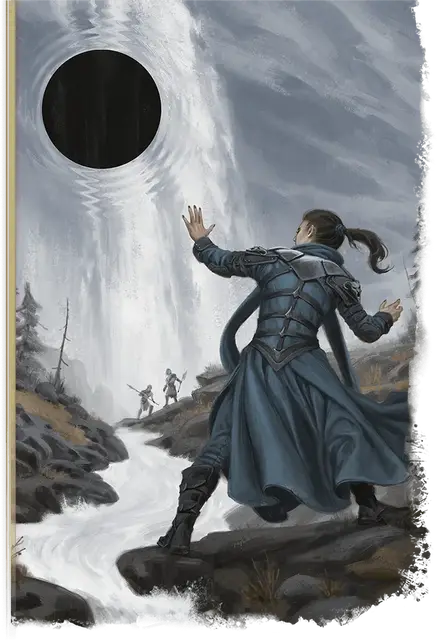

Сфера аннигиляции
Sphere of Annihilation
Чудесный предмет, легендарный

Рекомендованная стоимость 200 000 ЗМ
Эта чёрная сфера диаметром 2 фута — это прореха в мультивселенной, парящая в пространстве и стабилизированный окружающим её магическим полем.
Сфера уничтожает всю материю, через которую проходит, равно как и всю материю, проходящую через неё. Исключением являются Артефакты: если Артефакт не подвержен урону от Сферы аннигиляции, он проходит сквозь неё без повреждений. Всё остальное, что касается сферы, но не поглощается полностью и не уничтожается ею, получает 8к10 Силового урона.
Управление Сферой. Сфера аннигиляции неподвижна, пока над ней не установлен контроль. Если вы находитесь в пределах 60 футов от сферы, вы можете действием Магия выполнить проверку Интеллект (Магия) Сл 25; при успехе вы берёте сферу под контроль до начала вашего следующего хода, и если до этого она была под контролем другого существа, это существо теряет контроль над ней. При провале сферу перемещает на 10 футов по прямой линии в вашу сторону.
Пока вы управляете сферой, вы можете Бонусным действием переместить её в выбранном направлении на расстояние, не большее чем ваш модификатор Интеллекта, умноженный на 5 (минимум 5 футов). Каждое существо, в пространство которого входит Сфера, должно совершить спасбросок Ловкости Сл 19; при провале Сфера касается существа, нанося 8к10 Силового урона. Если Хиты существа опустились от этого урона до 0, оно уничтожается полностью, оставляя после себя снаряжение, но никаких других физических следов.
Взаимодействие со Сферой. Если сфера сталкивается с планарным порталом (например, созданным заклинанием Врата) или межпространственным пространством (например, внутри Переносной дыры), Мастер определяет, что происходит, броском по следующей таблице:
| 1к100 | Результат |
| 01-50 | Сфера уничтожается. |
| 51-85 | Сфера проходит через портал или попадает в межпространственное пространство. |
| 86-00 | Пространственная трещина отправляет сферу и каждое существо и каждый объект в пределах 180 футов от сферы на случайный план бытия. |